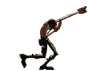
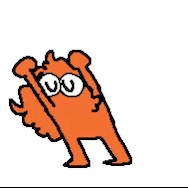
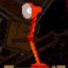
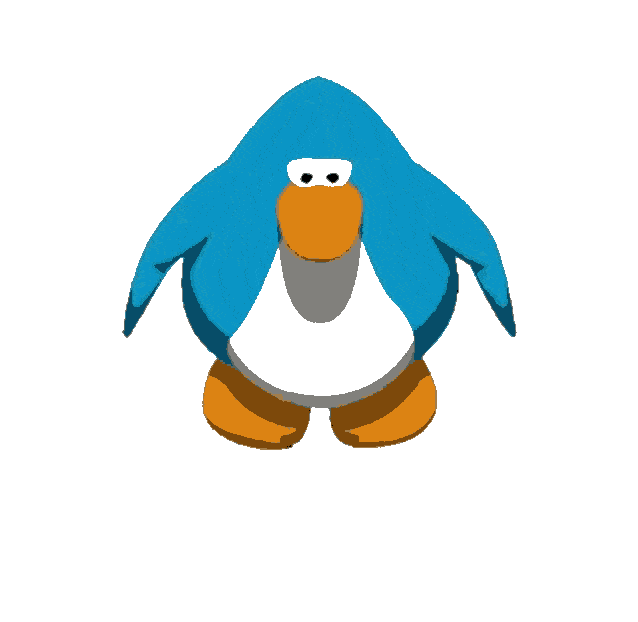
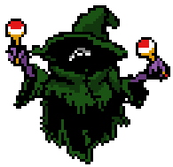
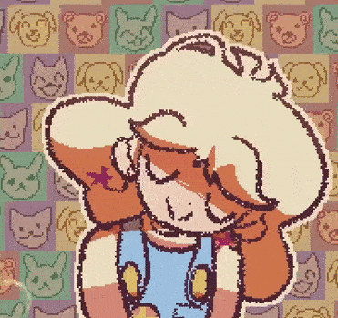

I LOVE MUSIC!
A wonderful art! An ancient art! I have a special relationship with music. Some of my best emotions come from there. This page and it's sub-pages are dedicated to music and how I show my love for it.
(Use the Navigatorial Navigator to the left to Navigate to the different pages.)





